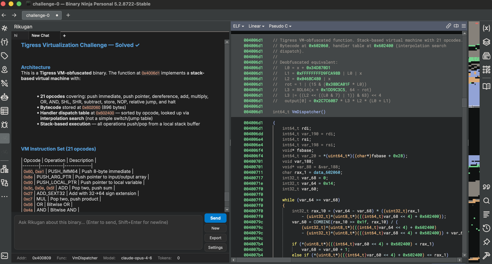
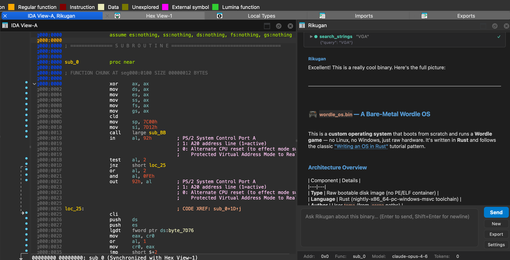

Rikugan is a full agent — its own agentic loop, context management, role prompt, and in-process tool orchestration. It doesn't talk to your disassembler through a server — it lives inside it.
/undo to roll back renames, comments, type changes, and more.execute_python always asks permission. See the full code with syntax highlighting before allowing execution.Type / to see available skills with autocomplete. Create custom skills in your user directory.
Type /modify <goal> and the agent autonomously explores, plans, patches, and saves — with your approval at every gate.
Switch providers anytime from the settings panel. Supports prompt caching, retry logic, and streaming.